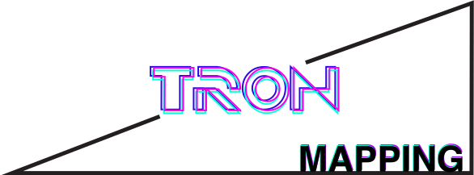
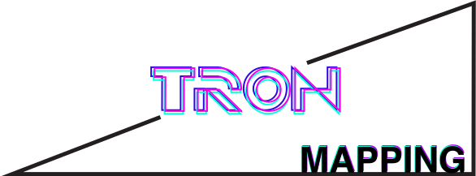
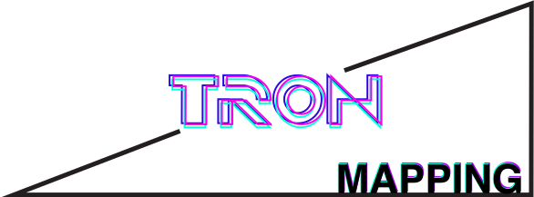
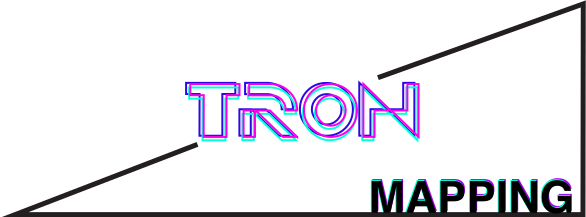

This project was a 2 days workshop on mapping, we learned basics and how to use the software Millumin during the first day and the second was dedicated to the creation of a 1 min video by group of 5 on a theme that we chose. We decided to work on the movie Tron, to create a futuristic scene on the music Tron by Daft Punk